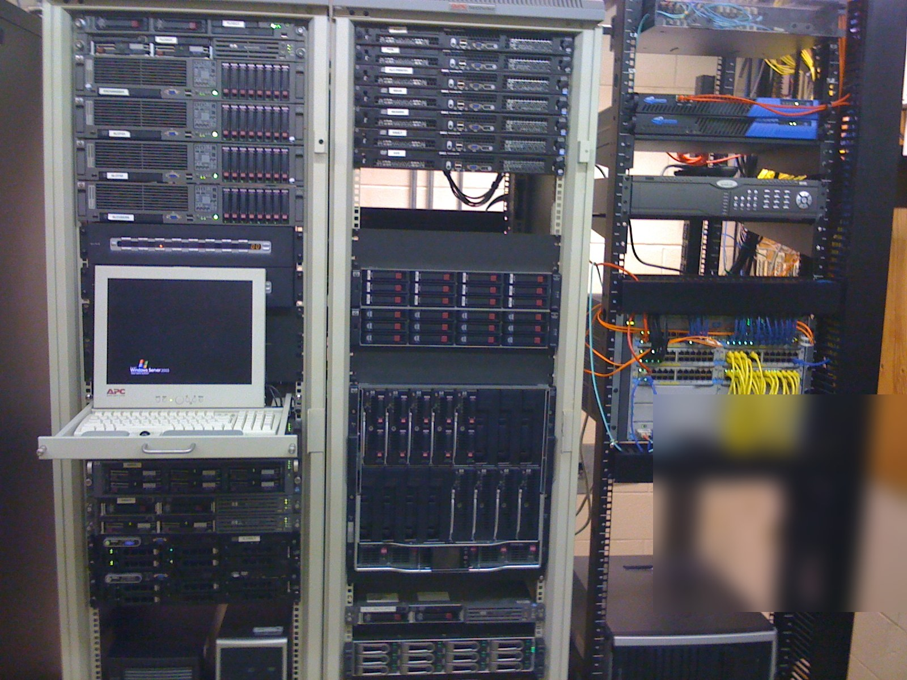

Situation
A growing manufacturing organization needed to move beyond a legacy server-room environment while keeping day-to-day operations running.
Infrastructure Modernization • Manufacturing • ERP • Early Career
I began my IT career supporting the affiliated Aluminum Ladder Company / Carbis organization. What started as day-to-day support grew into network administration and infrastructure modernization across Florence operations, the Darlington manufacturing facility, and remote personnel.
A growing manufacturing organization needed to move beyond a legacy server-room environment while keeping day-to-day operations running.
Compute, virtualization, shared storage, Windows Server services, Dynamics AX infrastructure, backup, power protection, networking, and voice communications.
A more consolidated and supportable infrastructure platform capable of carrying broader business workloads and manufacturing operations.
The starting point
The work was not a clean-sheet lab build. Production already existed. People still needed systems, phones, files, and business applications while the underlying infrastructure was being improved around them.
Compute and platform
The modernization included HP BladeSystem c7000 infrastructure, ProLiant blades, Virtual Connect, shared storage, VMware virtualization, Windows Server services, backup systems, upgraded power protection, and supporting network infrastructure.
Contemporaneous configuration exports from the environment show blade-hosted roles supporting Microsoft Dynamics AX application and SQL workloads, Exchange 2010, SharePoint, virtualized workloads, and backup services. The public case study keeps internal hostnames, addressing, serial numbers, account details, and topology identifiers out of view.
ERP and manufacturing operations
Infrastructure work supported a Microsoft Dynamics AX implementation and the broader manufacturing environment. The technical goal was not simply to install newer hardware; it was to create a platform that could carry business-critical workloads without turning every maintenance event into an operational problem.
Communications and resilience
The modernization also crossed communications and power. I supported deployment and administration of an NEC UNIVERGE SV8100 PBX and worked around the power-protection and continuity requirements that kept the environment usable when infrastructure conditions were less than ideal.
That broader view—compute, storage, network, voice, power, business applications, and the people depending on all of it—became the foundation of how I approached infrastructure work later in my career.
Preserved evidence
These public-safe derivatives come from historical project media. Metadata has been removed and sensitive labels or screens are obscured where necessary.




Operating lesson
This work shaped the way I still approach infrastructure: understand the dependencies, design around the operation, and avoid solving today's problem by quietly creating tomorrow's outage.
Evidence policy: Public media and technical descriptions on this page are derived from historical source material. Credentials, internal addressing, serial numbers, account information, precise facility details, and metadata are removed or obscured. Originals remain private and unchanged.